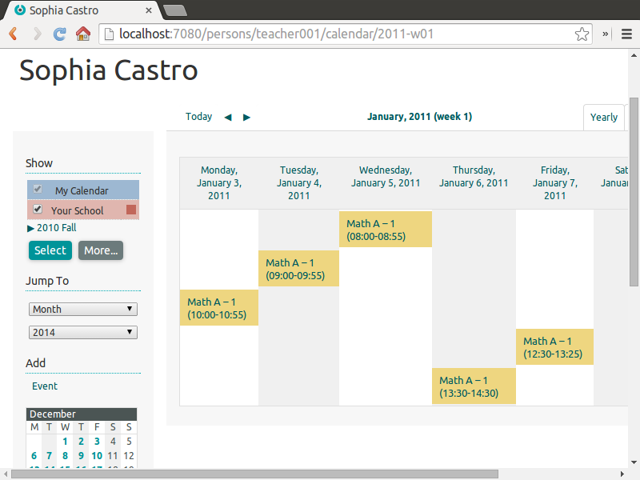
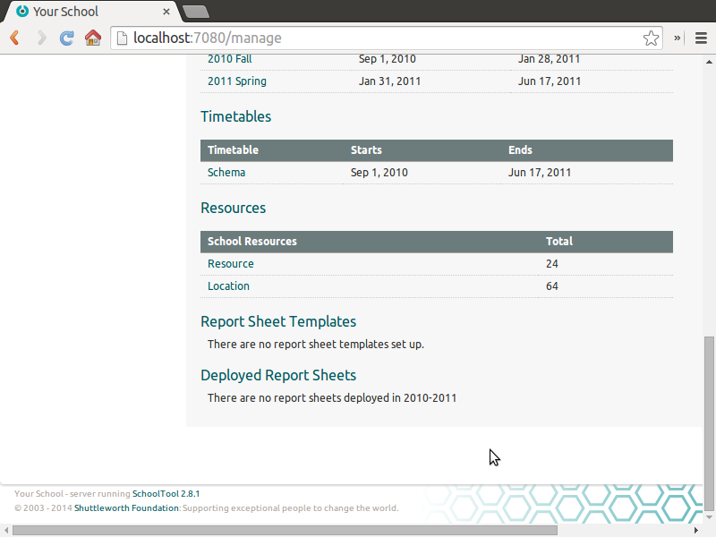
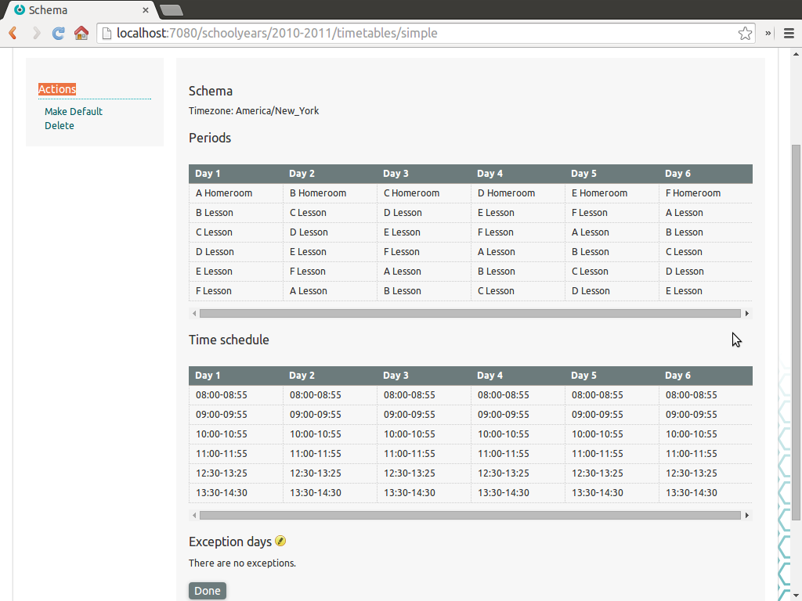
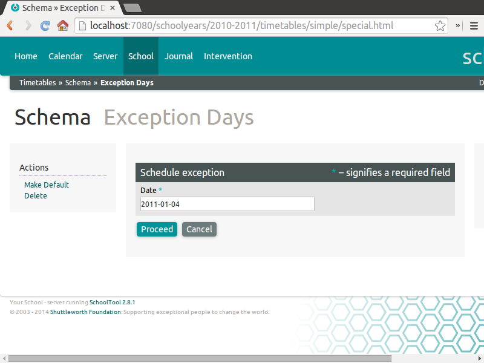
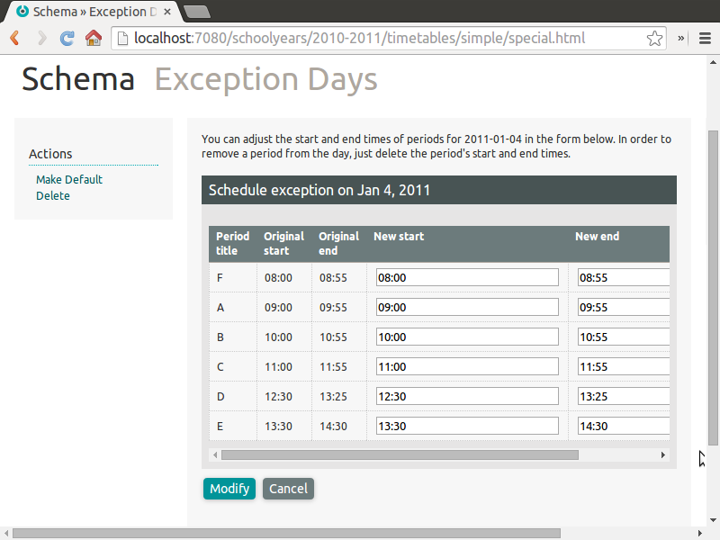
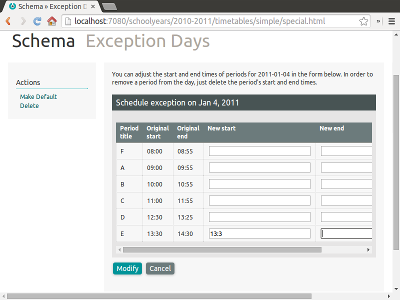
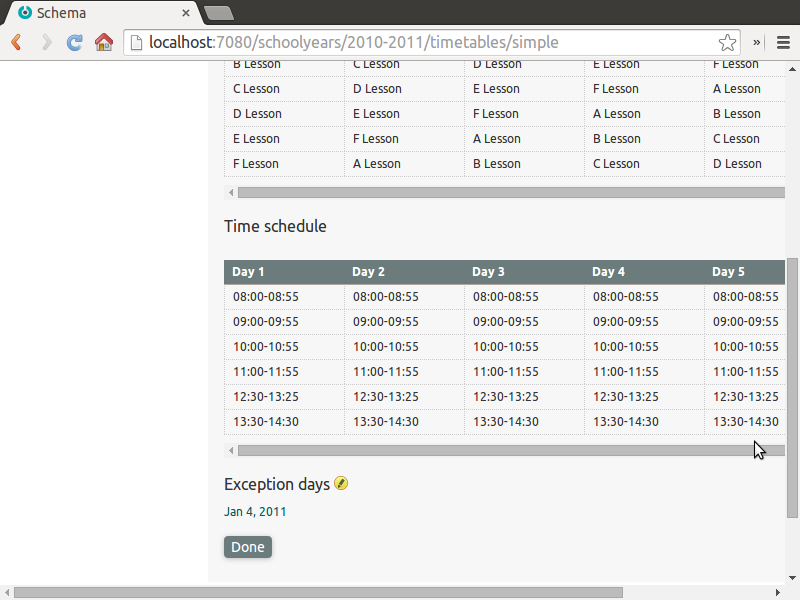
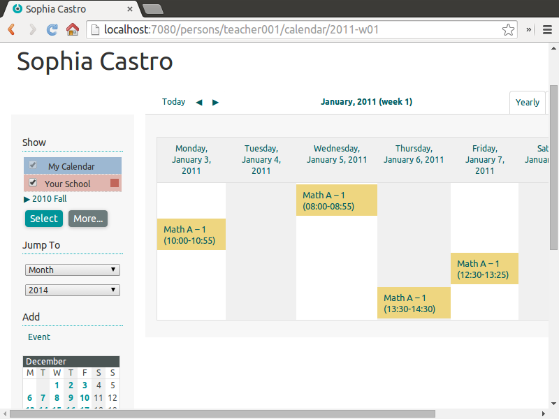
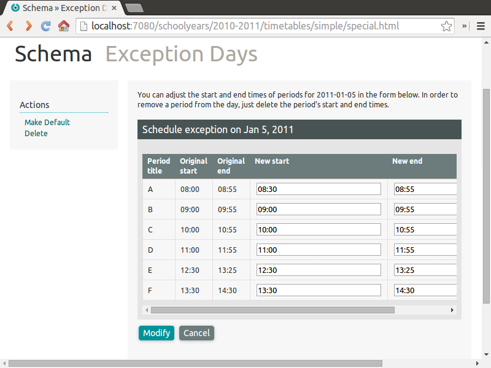
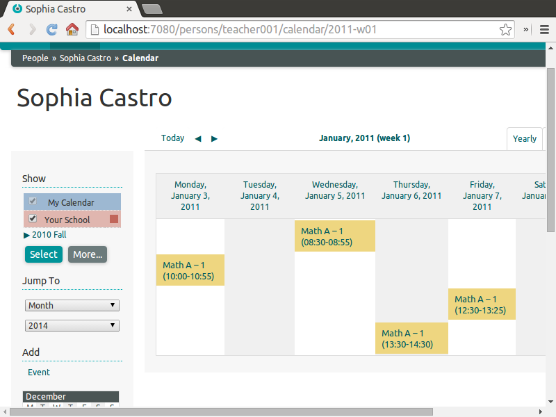

Advanced Timetabling¶
Exception Days¶
Exception days are days during a term when the regular timetable pattern does not apply. There are many possible reasons, such as a school assembly, early dismissal for teacher inservice training, or missing school for a weather related emergency.
Exceptions days are defined under the Timetables of the relevant year.
In this example we will cancel school on January 4, 2011, and shorten first period on January 5.
Here is the calendar of a teacher for this week:

To cancel school on January 4, as a member of Clerks or Site Managers, on the School page, with the appropriate year tab selected, click on the timetable schema or schemas relevant to the affected day. In our example, it is simply called “Schema.”

Clicking on the name of the schema provides this overview:

To add to Exception Days click on the edit pencil next to the text near the bottom of the page. First select the day to modify, in this case, we will cancel school on January 4, 2011:

The next form shows the standard start and end times for periods during the day. Removing the start and end times for a period cancels it entirely.

Since no sections should meet on a day school is cancelled, we must delete the start and end times for each period, leaving each space blank:

Click Modify and January 4 is now listed as an exception day:

Looking back at the teacher’s calendar for the week, we see no section scheduled on Tuesday, January 4. The schedule resumes as before on January 5.

Repeating the steps above, we will modify January 5, shortening first period to reflect a 30 minute delay in the start of school:

The new time is reflected in the teacher’s calendar:
